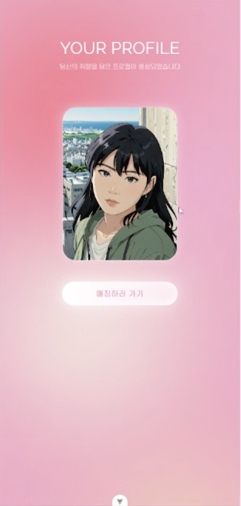
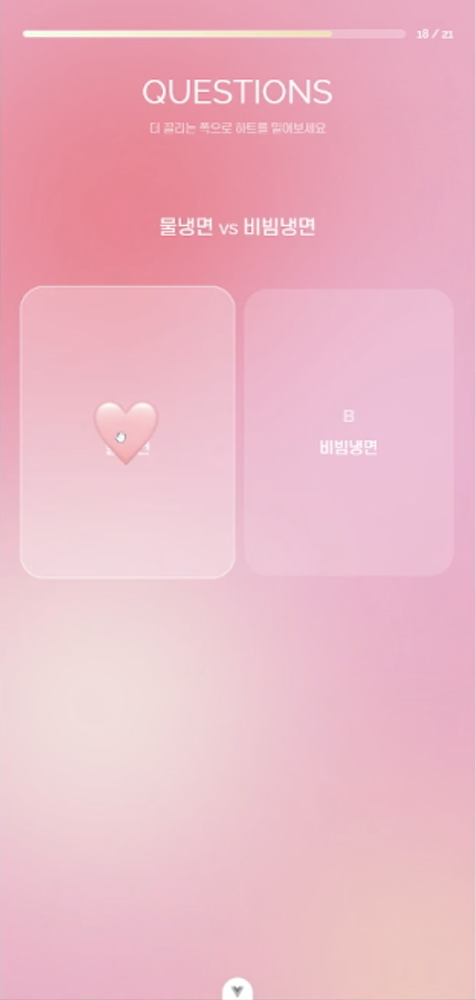
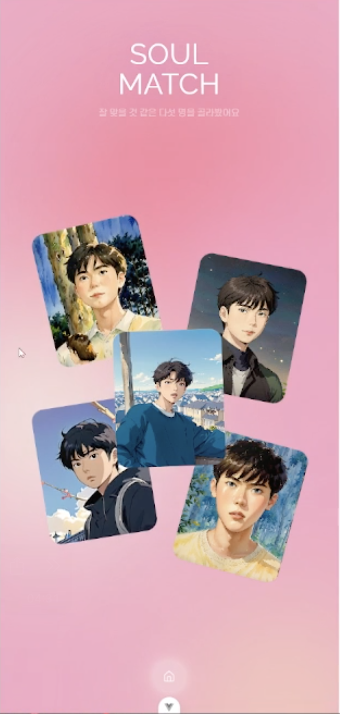
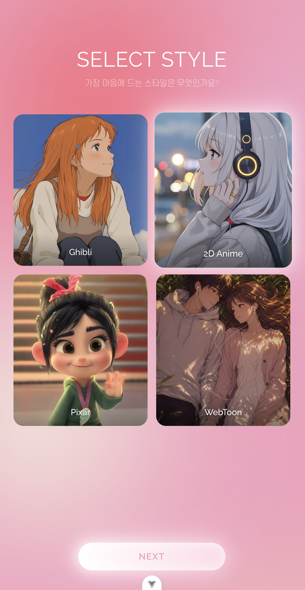
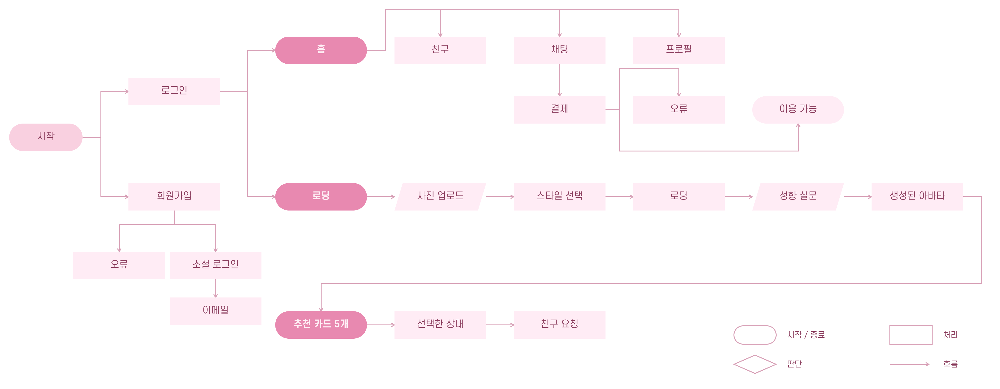
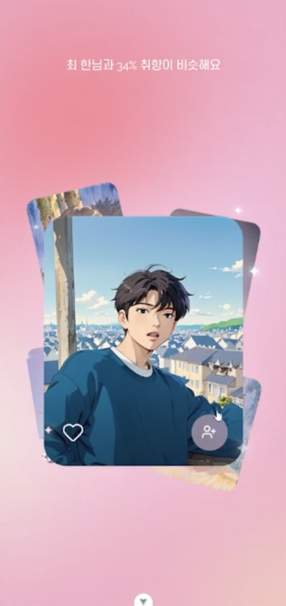
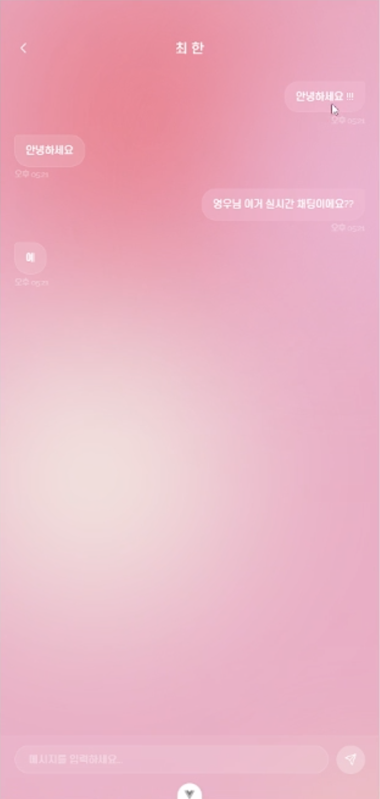

비슷함과 다름을 함께 고려
아침형·저녁형처럼 생활 패턴에 관한 질문은 비슷한 답변을 중요하게 보고, 전화·카톡이나 게임·운동처럼 선호에 관한 질문은 서로 다른 답변이 보완 관계가 될 수 있도록 반영했습니다. 두 사람 모두 다른 성향의 상대를 원한다면 이 차이를 더 중요하게 고려합니다.
OVERVIEW



01 / PROBLEM
사진과 외모만으로 첫인상을 판단하면 소개팅의 목적이
외모 중심으로 치우칠 수
있습니다.
외모가 이상형에 부합하더라도 취향이 맞지 않으면
관계가 오래 이어지기
어렵습니다.
02 / CONCEPT & DESIGN
CONCEPT / AI AVATAR
한동안 유행했던 “지브리 스타일로 바꿔줘”에서 아이디어를 얻었습니다. 본인의 사진을 바탕으로 아바타를 생성하고 프로필 이미지로 사용할 수 있도록, 네 가지 이미지 스타일을 선택하는 화면을 설계했습니다.
아바타 생성에는 Stable Diffusion 기반의 이미지 변환을 활용했습니다. 원본과 전혀 다른 사람이 되기보다는, 본인의 인상과 사진의 구도·포즈를 유지하면서 화풍을 바꾸는 방향으로 생성 방식을 조정했습니다. 얼굴 사진을 그대로 드러내지 않으면서도 ‘내 사진’이라는 느낌을 남기고자 했습니다.

CONCEPT / MATCHING
같은 답변이 많다는 이유만으로 상대를 추천하지는 않습니다.
질문마다 서로 비슷한
편이 좋은지, 다른 점이 서로를 보완할 수 있는지를 구분하고
중요도를 다르게 반영했습니다.
아침형·저녁형처럼 생활 패턴에 관한 질문은 비슷한 답변을 중요하게 보고, 전화·카톡이나 게임·운동처럼 선호에 관한 질문은 서로 다른 답변이 보완 관계가 될 수 있도록 반영했습니다. 두 사람 모두 다른 성향의 상대를 원한다면 이 차이를 더 중요하게 고려합니다.
부먹·찍먹, 붕어빵을 머리부터 먹는지 꼬리부터 먹는지 같은 질문은 추천에 미치는 영향을 낮췄습니다. 질문에 답하는 재미를 더하면서도 가벼운 취향 차이가 매칭 결과를 크게 좌우하지 않도록 했습니다.
두 사람이 공통으로 답한 질문을 기준으로 비교합니다. 모든 질문에 답하지 않았더라도, 응답한 내용 안에서 상대와의 궁합을 확인할 수 있도록 구성했습니다.
| 질문 | 나의 답변 | 상대의 답변 | 비교 기준 | 반영 점수 |
|---|---|---|---|---|
| 생활 패턴 | 아침형 | 아침형 | 같으면 잘 맞아요 | 1.2 / 1.2 |
| 연락 방식 | 전화 | 카톡 | 다르면 보완해요 | 1.0 / 1.0 |
| 가벼운 취향 | 부먹 | 찍먹 | 영향은 작게 | 0 / 0.5 |
공통으로 답한 질문만 비교하며, 보완 관계를 원하는 두 사람에게는 해당 질문의 중요도를 더 높입니다.
백엔드 팀원이 구현한 매칭 로직의 일부입니다.
same = (a_answers[qid] == b_answers[qid])
base_sim = 1.0 if same else 0.0
if q.match_type == 'complement':
sim = 1.0 - base_sim # 다를수록 좋은 질문은 점수를 반전
else:
sim = base_sim
weight = q.weight
if both_complement and q.match_type == 'complement':
weight *= 1.5 # 양쪽 모두 '다른 사람' 선호 → 보완 질문 증폭
return round(match_score / total_weight * 100, 1) # 0~100 정규화Flowchart

03 / FEATURES
아바타로 만들 본인의 사진을 업로드하고, 원하는 이미지 스타일을 선택할 수 있도록 구성했습니다. 스타일별 예시 이미지를 함께 보여주어 원하는 분위기를 고르기 쉽게 했습니다.
AI가 사용자 이미지를 바탕으로 아바타를 만드는 동안 취향 질문을 제공하는 흐름을 고려했습니다.
긴 질문지가 주는 부담을 줄이고자 AI 아바타가 생성되는 동안 취향 질문에 답하도록 구성했습니다. 단순히 기다리는 대신 상대 추천에 필요한 답변을 채우며 다음 단계로 자연스럽게 이어지도록 했습니다.
각 질문은 두 가지 선택지 중 하나를 고르는 방식으로 제시하고, 스와이프로 간편하게 답할 수 있도록 했습니다. 선택과 조작을 단순하게 만들어 고민하는 시간과 답변의 부담을 덜고자 했습니다.
사진을 바탕으로 생성된 아바타를 확인하고 프로필 이미지로 사용할 수 있도록 구성했습니다.
취향 질문에 대한 응답을 바탕으로 상대를 추천하고, 상세 화면에서 상대의 프로필과 매칭 정보를 확인할 수 있도록 구성했습니다.

매칭된 상대와 채팅으로 대화를 이어갈 수 있도록 구성했습니다.

AI 서버가 중단된 상태라 아바타 생성·매칭·채팅 화면은 기존 시연영상에서 캡처한 이미지로 소개합니다. 실제 기능의 동작과 화면 모션은 아래 시연영상에서 확인할 수 있습니다.
04 / DEMO
05 / REFLECTION
개발을 배우고 처음 진행한 프로젝트인 만큼 아쉬움도 많이 남았습니다. 개발 전에 준비해야 할 문서와 작업 과정, 용어부터 익숙하지 않았습니다. 구상한 내용을 팀원과 공유하고 기록했지만, 구현 과정에서 미처 예상하지 못한 변수들을 마주했습니다. 화면 간 흐름이 자연스럽지 않은 문제를 함께 해결하면서, 다음 프로젝트에서는 사용자 동선과 화면별 동작을 더 구체적으로 정의하고 검토해야 한다는 것을 배웠습니다.
이미지 생성 단계에서도 서비스의 색상 팔레트를 미리 정하고 공통 기준으로 적용했다면, 이미지와 UI 사이의 시각적 일관성을 높이고 서비스의 컨셉을 더 분명하게 전달할 수 있었을 것 같습니다. 다음에는 생성 이미지까지 포함한 디자인 기준을 먼저 정해 전체 화면의 분위기를 함께 맞추고 싶습니다.
Vue와 Django를 사용하는 조건에 맞춰 모바일 앱 대신 모바일 UI 기반의 웹 서비스로 구현했습니다. 브라우저에서 화면이 전환될 때 발생하는 깜빡임을 충분히 개선하지 못한 점은 아쉬움으로 남습니다. 낯선 과정 속에서도 함께 문제를 풀고 끝까지 완성할 수 있도록 많은 도움을 준 팀원에게 감사합니다.